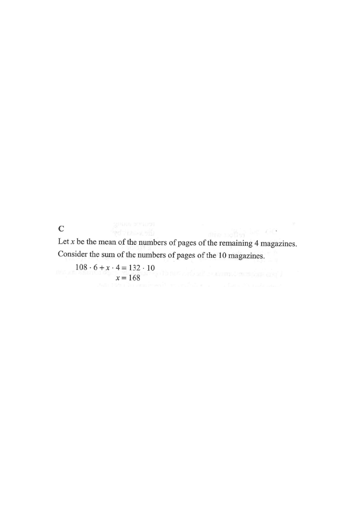

Scroll the solution to highlight each stage of the calculation.
The mean of the numbers of pages of 10 magazines is \(132\). If the mean of the numbers of pages of 6 of these 10 magazines is \(108\), then the mean of the numbers of pages of the remaining 4 magazines is

Let \(x\) be the mean of the numbers of pages of the remaining \(4\) magazines.
Then the total number of pages in those 4 magazines is \(4x\).
Hint: it is usually easier to work with the total than with the mean.\[ \text{Total} = \text{mean} \times \text{number} = 132 \times 10 = 1320. \]
Hint: mean × count gives the sum — the key idea behind all "mean" problems.\[ \text{Sum of 6} = 108 \times 6 = 648. \]
So the remaining 4 magazines contain
\[ 1320 - 648 = 672 \ \text{pages.} \]
Hint: subtract the known part from the whole.\[ x = \frac{672}{4} = 168. \]
As one single equation:
\[ 108 \cdot 6 + x \cdot 4 = 132 \cdot 10 \;\Rightarrow\; 648 + 4x = 1320 \;\Rightarrow\; 4x = 672 \;\Rightarrow\; x = 168. \]
Hint: always divide the total of the remaining items by the number of remaining items.Question. The mean number of pages of \\(12\\) magazines is \\(96\\). The mean number of pages of \\(5\\) of them is \\(89\\). Find the mean number of pages of the remaining \\(7\\) magazines.